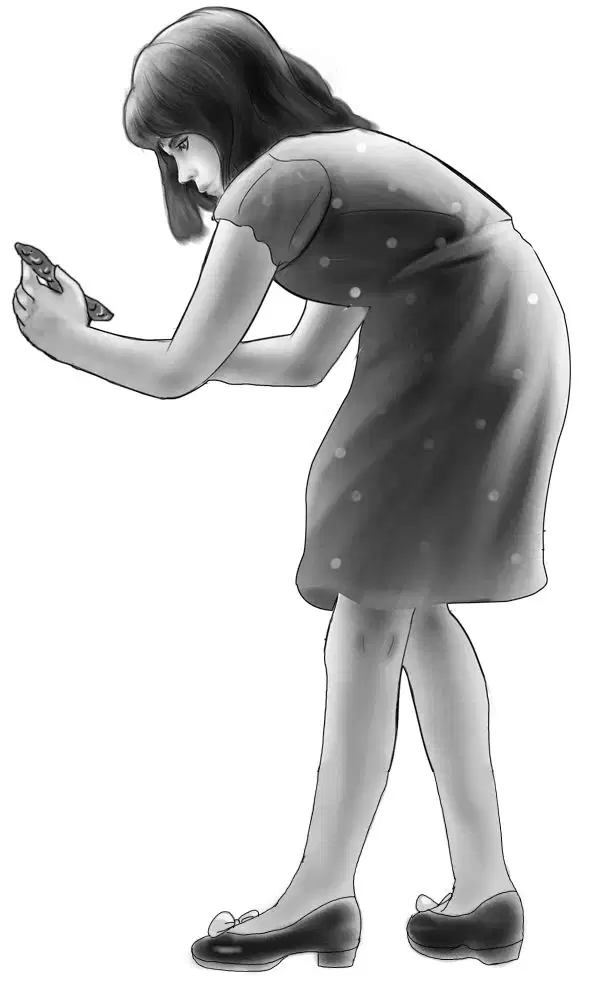
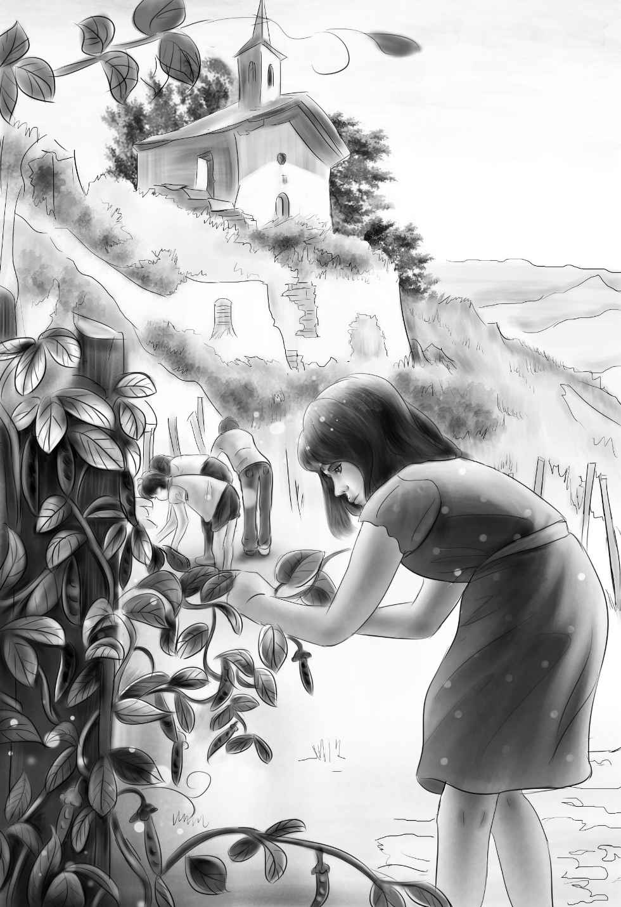
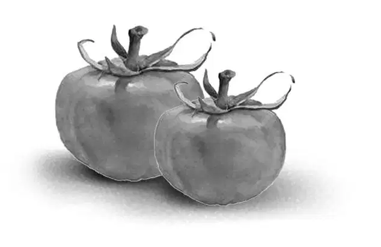
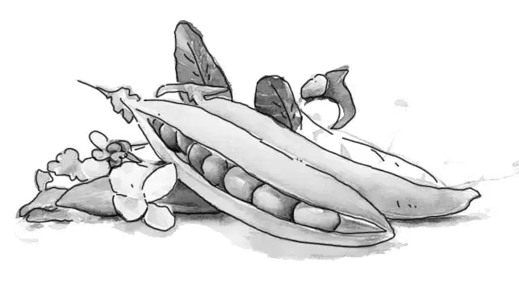

Now that breakfast was over, Benny said, “My, I feel good. I feel like having an adventure. I only wish our shadow would stop whining. Shadow,don’t you know that shadows don’t whine?”
But Shadow paid no attention. He ran along, whining softly.
Violet said to Benny, “I don’t know why you want another adventure. I’d say we have had an adventure already—not to say a mystery.”
“Well, I like adventures all the time,” replied Benny. “Now look—isn’t that a vegetable stand up the road? It has a big red sign. Now that’s interesting.”
“There’s a boy selling vegetables,” Jessie said,looking down the road.
Then the Aldens saw a man carrying a basket from a field to the roadside stand. He walked slowly, and seemed tired.
“Why doesn’t that boy help?” Benny asked.
They all found the answer when they rode up to the stand. The boy had one leg in a cast. A pair of crutches stood in the corner of the shed behind him.
The boy saw the Aldens looking at him. “I fell in the barn and broke my leg,” he told them.
“Oh,” said Violet. “I’m sorry.”
“I’ll be all right,” the boy said. “But the trouble is that my father needs my help right now. All I can do is keep the stand open for him. I can’t help with the picking and carrying.”
The boy stopped talking and looked worried.
“Could you use a little help?” asked Henry. “We are just passing through.”
“Did you say help?”exclaimed the boy. He could not believe his ears.“What do you mean, help?”
“We mean just what we say,” said Henry, and the other Aldens all nodded. He got off his bike and the rest did the same. “We’ll be glad to help you if you tell us what to do.”
The man and the boy stared. Then the man said slowly, “I never heard anything like this. We’ve got work enough if you really mean it.”
For answer, the Aldens wheeled their bikes behind the stand.
The father said,“I have ripe tomatoes, cabbages, and beans to pick. It’s more than I can do alone.”
Jessie said, “Violet and I can pick beans. We know how to do that.”

Henry said,“Show me how to cut the cabbages and I’ll work at that.”
“That leaves me with the tomatoes,” Benny said. “I like tomatoes the best, anyway.”
“How much do you charge?” the man asked.

“Nothing,” replied Henry. “We are just passing through on a bicycle trip. My brother Benny was looking for an adventure.We’ll call this an adventure.”
“I’d call it hard work,” the man said. That made the Aldens smile. It was exactly what Mr. Martin at Second Landing had said when they offered to help Mrs. Randall.
The man went on, “My name is Smith. I guess you can remember that. You mean to tell me that anybody does something for nothing nowadays?”
Benny said,“We like to, Mr. Smith. Especially during vacation. My name’s Benny Alden. These are my sisters and my brother Henry.”
The boy was about Benny’s age. He said, “My name is Roy. I wish I could go along with you.”
Violet looked at Roy and had an idea. “I know what you can do to help,” she said. “I don’t think our dog Shadow should follow us into the garden. Why don’t you keep him here with you?”
Roy patted the dog and Shadow wagged his tail. He was a friendly little dog.
“I never saw a dog like this before,” the boy said. “What kind is it?”
“We don’t know,” Benny answered. Then he told how Shadow had come to them during the rainstorm. “He just sticks right with us,” Benny finished. “That’s why we call him Shadow.”
“But we wish we could find his owner,” Jessie said.
“Well, Shadow and I will keep the stand,” Roy said.
“Stay!” Henry told the dog, and Shadow sat down. Mr. Smith led the way to the garden.
Soon there were five workers instead of one. Mr. Smith began to look happier. With the Aldens’ help, the work went quickly.
Some customers drove up just as the Aldens came from the garden with a load of fresh vegetables for Roy’s stand. The customers could see how fresh the beans and the cabbages and the tomatoes were. They bought several bags full.
The sun was warm and pleasant after the rain. Everything smelled sweet with the hay in the next field.
Once when they were working in the garden Mr. Smith stopped to listen. He asked Benny, “Does that dog whine all the time?”
“Yes, he does,” answered Benny. “Even when he should be happy, he whines. That’s why we think he has a good home. But maybe someone went away and left him.”
“I don’t think so,” Mr. Smith said. “I can remember seeing a picture of a dog like that in a magazine. I can’t remember what kind he was, but I know a dog like that is worth a lot of money. If the owner didn’t want him, he could sell him.”
“Too bad he can’t talk,” Benny said. “He could tell us what happened and we could take him home.”
“Anyway,” Mr. Smith said, “we can feed him. It is time for lunch. Come on, we’ll have lunch. You’re hungry, aren’t you?”
“I’m always hungry,” Benny said.
But Jessie said, “I’m not sure we ought to stay. You can’t feed four extra people like this.”
Roy heard what Jessie said and answered, “Oh, yes, we can. My dad is a good cook. He’s got a stew on the stove this minute. We can eat any time.”
Jessie gave in. She saw that Mr. Smith really wanted to pay them in some way for their help. And she was just as hungry as Benny.
Mr. Smith and the Aldens washed their hands in cold water at the pump. Then they went into the farm kitchen. Roy and Shadow stayed outdoors at the stand.
Mr. Smith set five plates of stew on the table. He said, “The stew is too hot for the dog. I’ll set his out to cool. After we eat, you can take it to him. Then Roy can come in and eat.”
The Aldens and Mr. Smith sat down to lunch. Henry told him how Shadow had found them in the old house.
“That house is on the back road,” said Mr. Smith. “It doesn’t help much in finding the dog’s home.”
After lunch they all went back to the stand with Shadow’s plate.
Roy said, “Let me tell you a funny thing that happened while you were gone.”
“What was it?” Benny asked quickly.
“Well, a pickup truck came along and stopped.The man got out and bought some vegetables. But in the back of the truck, sitting on the floor, were twin girls about six years old. They looked just alike, and they were dressed alike, only one was dressed in pink and one was dressed in blue. All at once they saw Shadow sitting there. The girl in pink said, ‘Oh, look! There’s the very dog we saw in the parking lot!’”
“Parking lot!” repeated Benny. “I wonder what parking lot?”
“I don’t know,” said Roy. “It took me by surprise.The twin in blue called to him, ‘Come, doggie, doggie,’ and the one in pink snapped her fingers.”
“I bet Shadow never moved,” exclaimed Benny.
“Right,” said Roy. “He just sat still. Henry had told him to stay, and he stayed. He did wag his tail, though. I noticed that.”
Jessie asked, “Do you think he knew the little girls?”
“Yes, I think he did,” answered Roy. “But not very well.They didn’t know his name. They probably just saw him running around in some parking lot.”

“Oh, dear,” said Violet. “If we only knew where the parking lot was, we could find Shadow’s owner.”
Jessie was thoughtful. “It does help a little. It shows that the twins live rather near here.”
“No, I don’t think so.” Roy shook his head. “We have had this vegetable stand for three years. And I never saw the pickup truck before or the man or the twin girls.”
Henry said, “Mr. Smith, how would you begin if you had to find Shadow’s owner?”
Both Mr. Smith and Roy laughed. Mr. Smith replied, “I’d try Miss Lucy at the post office. She knows everything. If anyone around here has lost a dog, she will know all about it.”
“We’ll ask her,” Benny said. “Where is the post office?”
“About two houses down this road,” said Roy, still laughing. “Have a good time!”
Henry said, “We have to be on our way now. My map shows that we have to ride about ten miles to find a motel where we can spend the night.”
“That’s right,” agreed Mr. Smith. “That will be in the town of Ashby. It’s a good motel, and it has a dining room. Thank you for your help.”
“And thank you for the delicious lunch,” said Jessie. “I see that Shadow has licked his plate clean.”
When the Aldens reached Miss Lucy at the post office, they saw why Roy had laughed. Miss Lucy was a thin, sharp-eyed lady.
“No,” she said. “I know every dog and cat and rabbit and horse and cow in this town, and I know nobody has lost a dog. I never saw such a comical looking animal.”
“Well, thank you just the same,” said Jessie. “If you ever hear of a lost dog, tell Mr. Smith at the vegetable stand. We left our names with his son Roy.”
“I will,” said Miss Lucy. “But you can be sure nobody around here would own a dog like that. That dog ought to go to a dog show, or more likely, a circus!”
“When they were out of sight of the post office, Benny said, “You know I don’t think Shadow is that funny looking. I think he’s beautiful. People just aren’t used to him, that’s all.”
And so the Aldens pedaled along the quiet country road. But Shadow still whined.